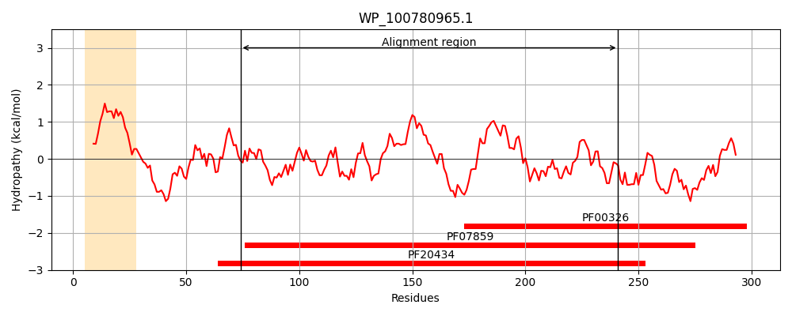
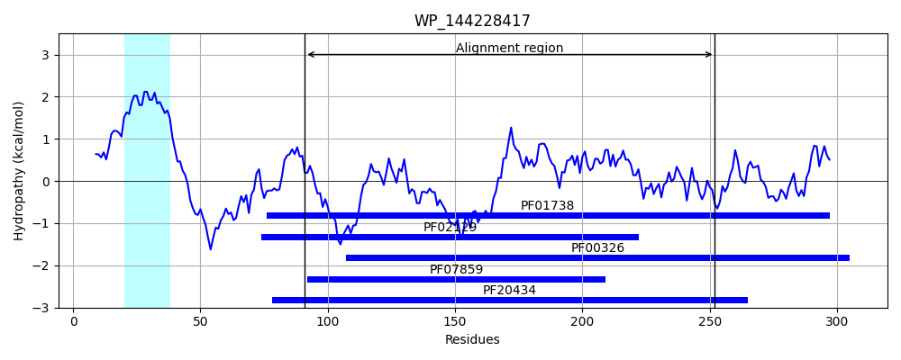
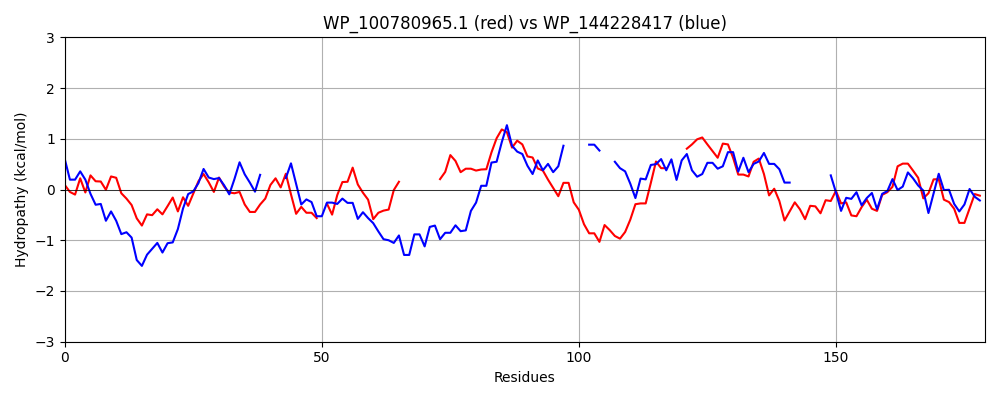

Hit Accession: WP_144228417
Hit TCID: 4.C.3.1.11
Hit Description: gnl|BL_ORD_ID|21925 gnl|TC-DB|WP_144228417.1|4.C.3.1.11 alpha/beta hydrolase fold domain-containing protein [Opitutaceae bacterium 53C-WASEF]
Mach Len: 179
e:0.000001
Query TMS Count : 1
Hit TMS Count: 1
TMS-Overlap Score: 0.850000
Predicted Substrates:None
BLAST Alignment:
Score: 115 , Bit scores: 48 bits, E-value: 1.0e-06, Alignment length: 179, Percentage identity: 29
Query: 74 GVLVAAGGGYQRIEMGSEAWPAAHWLTAHGYTAYVLSYRLPGEGWQAGAL-APLQDAQRALRLISA-------RESQVSVLGFSAGGHLLGMAACRPAFTSYPPEDALDHQPATADGA---ALIYPVITLLPPWSHTATHRLLVGPQASEAADRAWSVQTWVTTATPPCFLVQAQDDPI 241
GVL+ GGG++ + + A L A GY +YR G A AP++D + ALR + A R +V+ G+SAGGHL + PPE L Q A GA +YP L+P + ++ A R S ++ +PP FL A +D +
Sbjct: 91 GVLLIYGGGWKPSDNRYQMKSIAKQLAARGYVVMNAAYR----GAPAFTYPAPVEDLREALRWLHAHADEYRLRTDRVATFGYSAGGHLAALVGLMDG----PPE--LRVQAIVAGGAPSDLTLYPGGDLVPAFLGGTIDQI-------PATFREASPINHISAGSPPVFLYHAGNDKL 252 | Protein Hydropathy Plots: |
|---|
|  |  |
Pairwise Alignment-Hydropathy Plot:
|
|---|
|  |